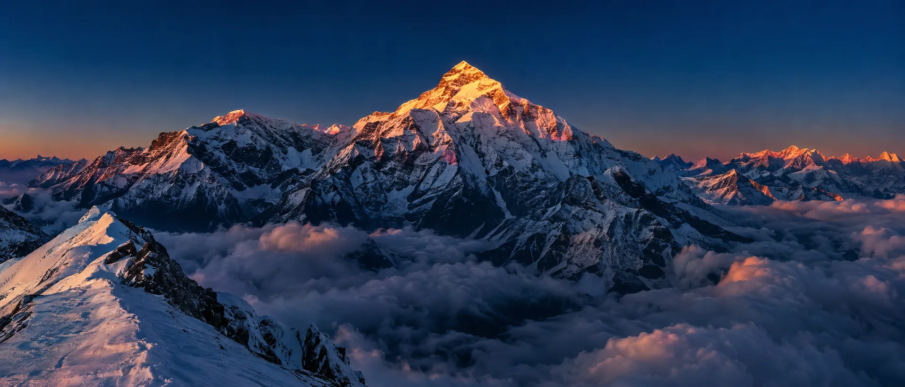
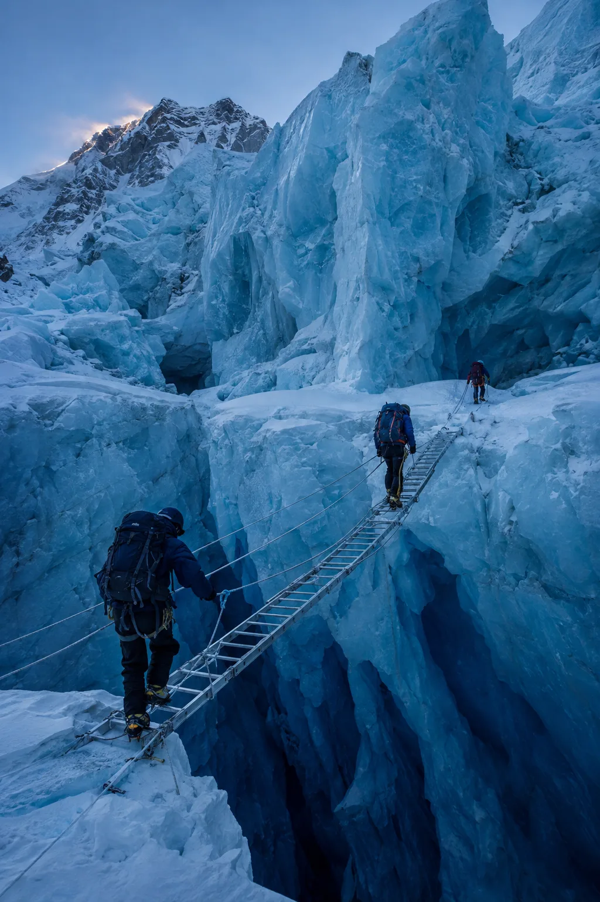
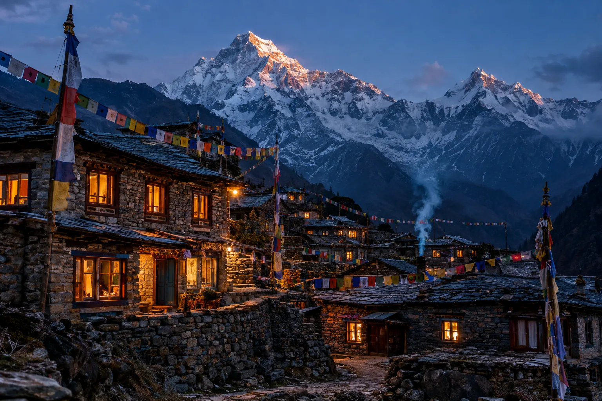
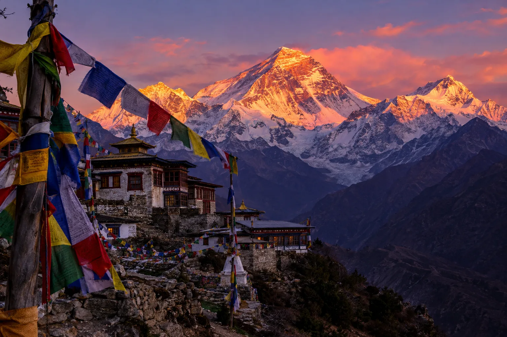
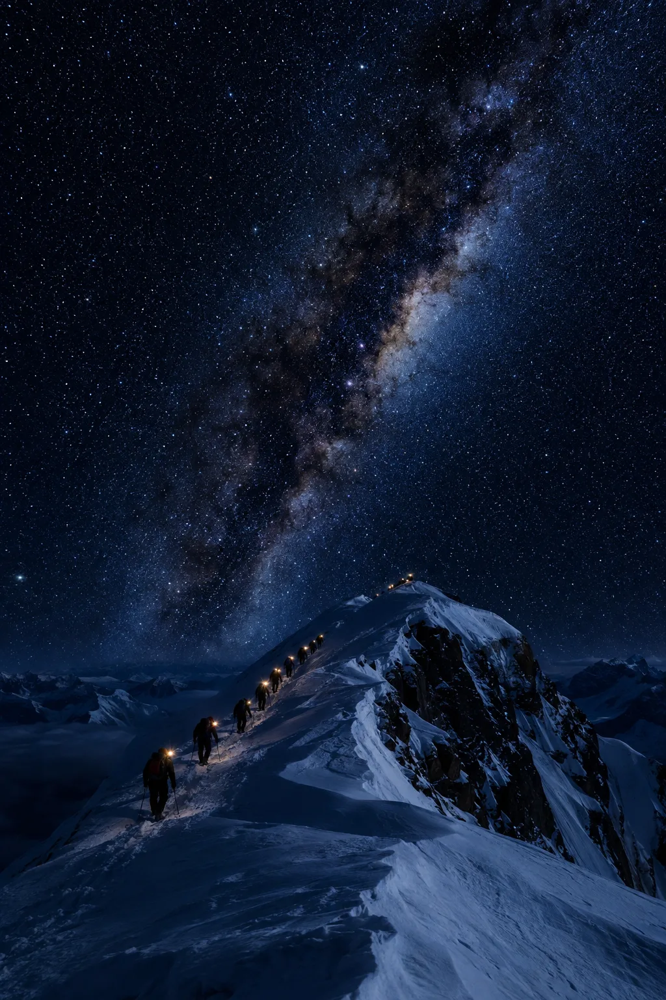

Sagarmatha
The roof of the world, measured to the centimetre.
In Nepal they call it Sagarmatha, the head of the sky. Tibetans call it Chomolungma, goddess mother of the world. The rest of the planet knows it as Mount Everest — 8,848.86 metres of rock, ice and jet-stream wind on the border between Nepal and Tibet. This is a field guide to the highest place on Earth: how it got its height, who climbs it, and what the climb costs.
The mountain, measured
Everest's height is not a constant. It is a negotiation between moving continents, earthquakes, monsoon snowfall and the patience of surveyors.
The climb, waypoint by waypoint
Almost every summit follows the route Hillary and Norgay opened in 1953. From Base Camp to the top is barely 20 kilometres — but 3,485 vertical metres, the last thousand of them above the altitude where the human body begins to die. Explore the route.
Elevation profile, Base Camp to summit. Dashed line: 8,000 m, the edge of the death zone. On small screens, swipe the chart sideways. Select or tab through the waypoints for detail.
The Icefall
Between Base Camp and Camp I the route crosses the Khumbu Icefall — a two-kilometre chaos of ice blocks the size of houses, shifting and collapsing on a glacier that moves up to a metre a day.
Climbers pass through in the dark, before the sun softens the seracs, over aluminium ladders lashed horizontally across crevasses. For the Sherpa staff, who cross it dozens of times a season carrying loads, it is statistically the deadliest hour on the mountain.


The people of the Khumbu
Below the ice, life runs on barley, potatoes, yaks and prayer flags. The high villages of the Everest region — Namche Bazaar, Khumjung, Thame — sit above 3,400 m, an economy built around the mountain.

Not a job title
"Sherpa" is an ethnicity, not an occupation. The Sherpa people migrated from eastern Tibet into these valleys some five centuries ago, farming at altitudes where most lowlanders cannot sleep, practising Tibetan Buddhism and trading across passes that mapmakers called impossible.
When Everest opened to foreign expeditions in 1950, they became the backbone of every climb — as porters, then as the world's finest high-altitude mountaineers. Tenzing Norgay, who stood on the summit with Hillary in 1953, remains the most famous. Kami Rita Sherpa, born in the village of Thame, has now climbed the mountain 32 times — more than any human in history. No summit on Everest has ever been achieved without Nepali hands on the ropes.
The death zone
Above roughly 8,000 metres the air holds about a third of its sea-level oxygen, and no one acclimatises there — the body is dying, minute by minute, while it moves. Climbers call it the death zone, and every hour spent above it is borrowed.
The summit itself is guarded by weather: the jet stream parks itself on the peak for most of the year at hurricane force. The entire climbing season is the brief May window when the stream shifts north — and the queues that form on summit morning are what happens when hundreds of people's weather forecasts agree.
So climbers leave the South Col at midnight, headlamps in a line, chasing a dawn they cannot afford to miss. The descent, exhausted, is where most deaths happen.

One hundred years of the highest place
The modern history of Everest: a surveyor's arithmetic, a coronation-morning telegram, and a record that keeps being broken by the same pair of boots.
-
1852
In the Survey of India's office in Kolkata, Bengali mathematician Radhanath Sikdar works through the trigonometry and identifies Peak XV as the highest point on Earth.
-
1865
The Royal Geographical Society names the peak after Sir George Everest, a former Surveyor General of India — a man who never saw it. The mountain is far older than every name it carries.
-
1921
The first British reconnaissance expedition reaches the North Col, opening the era of serious attempts from the Tibetan side.
-
29 May 1953
Edmund Hillary of New Zealand and Tenzing Norgay, a Sherpa, stand on the summit via the Southeast Ridge. The coded telegram reaches London on the eve of Elizabeth II's coronation.
-
1975
Junko Tabei of Japan becomes the first woman to summit Everest, twelve days after being buried by an avalanche at Camp II.
-
1978
Reinhold Messner and Peter Habeler climb without supplemental oxygen — proving the death zone survivable, barely, on lungpower alone.
-
1980
Messner returns to climb Everest solo, from Tibet, in monsoon season, still without oxygen. No one has repeated anything quite like it.
-
1996
A single storm kills eight climbers in the death zone and begins the world's argument about what commercial expeditions have made of the mountain.
-
2014–2015
An icefall avalanche kills 16 Sherpa staff in a single day; a year later an earthquake-triggered avalanche sweeps Base Camp, the mountain's deadliest day.
-
8 Dec 2020
Nepal and China jointly announce a revised official height: 8,848.86 m, ending a decades-long dispute over rock versus snow.
-
17 May 2026
Kami Rita Sherpa, 56, summits for the 32nd time, extending a record that no climber on Earth is close to touching.
Sources
- Height & 2020 re-measurement — BBC News, Associated Press
- Summit, ascent and fatality statistics — Alan Arnette: Everest by the Numbers and the Himalayan Database
- Kami Rita Sherpa's 31st and 32nd summits — Guinness World Records, NPR, Wikipedia
- Altitude physiology — UIAA Mountain Medicine